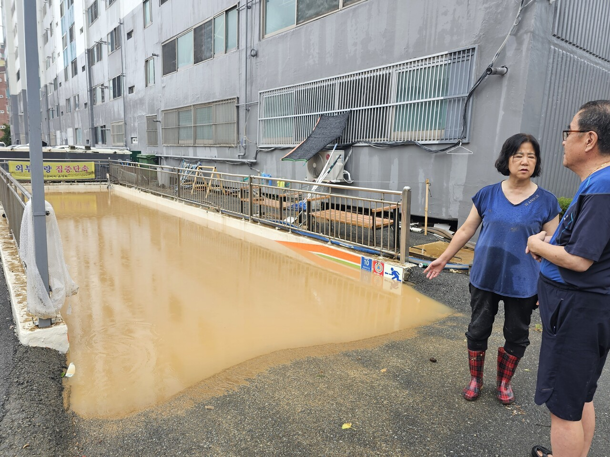
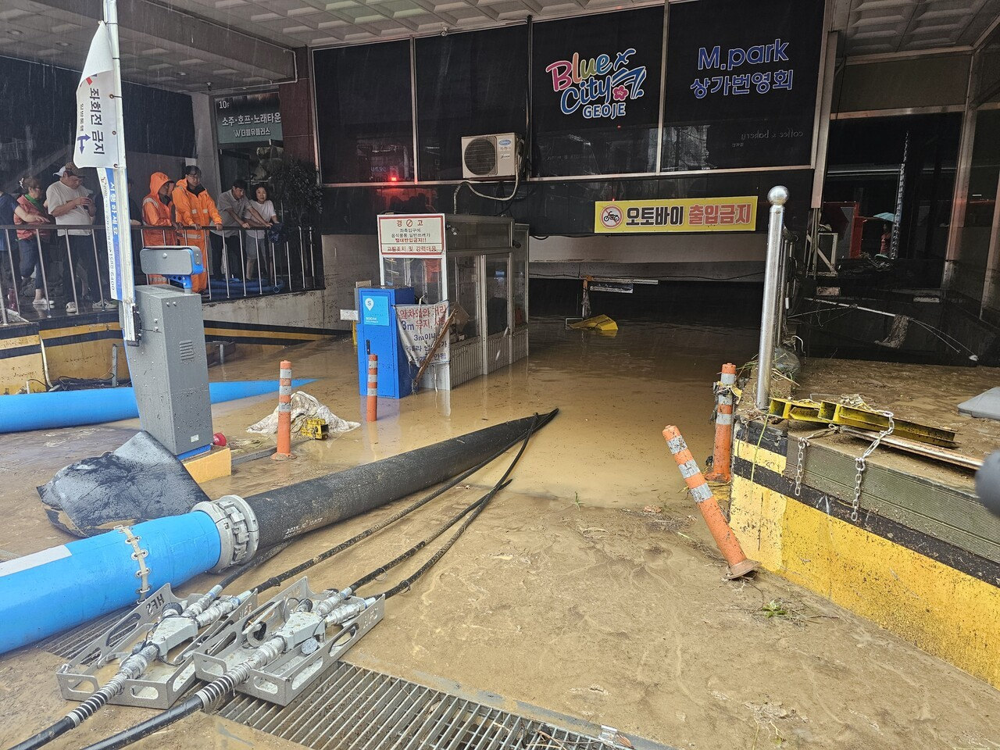
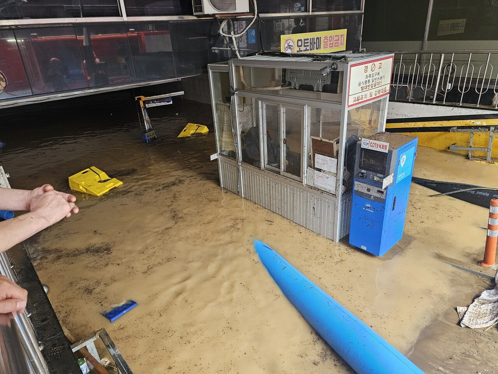
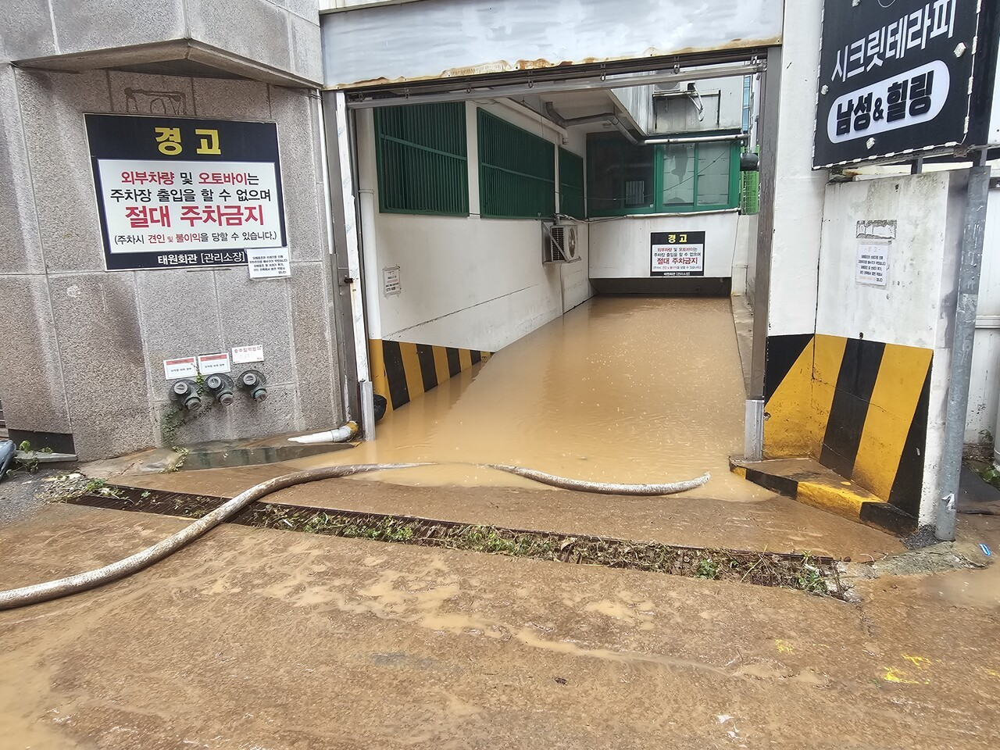
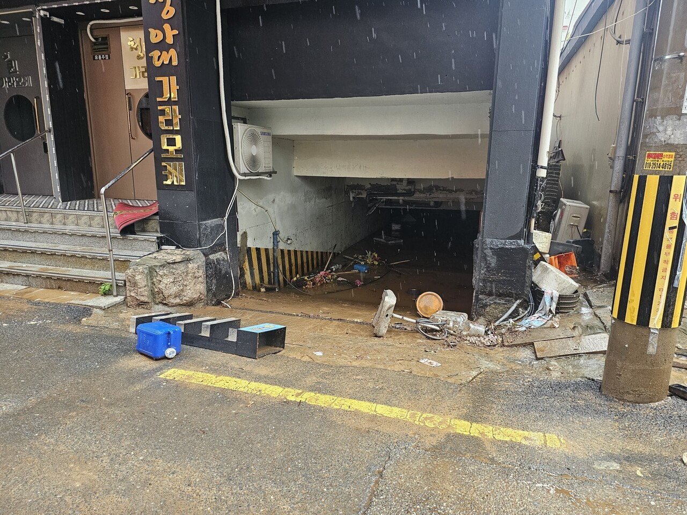
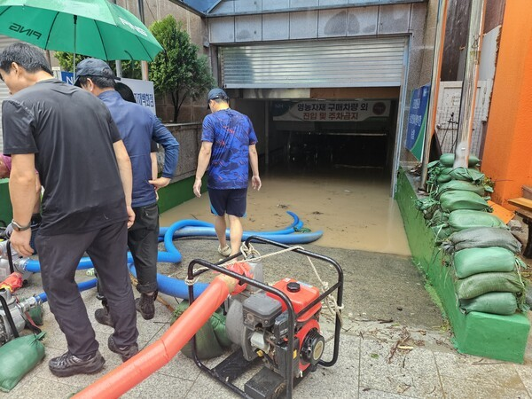

      너무 빠르게 침수되서 차빼러갈 시도조차 못하고 대부분 잠김
댓글
수집 당시 댓글 45개
고잡추채 · 3 일 전
그 트럭기사 아재가 젊은애들 구한거? 자기 딸 목숨 구해 주셨다고 찾아와서 오열하는거보고 나도 눈물 찔끔 나더라 ㅠ
고잡추채 · 3 일 전
어디든 제발 인명피해가 없기를 바란다. 자연재해로 죽으면 얼마나 억울하고 가족들은 또 얼마나 억장이 무너지겠냐
GDRAGOON · 3 일 전
그 몇년전에 아들을 눈 앞에서 보낸 어머니의 지하 주차장 침수 사건이 생각난다. 기사만 봐도 눈물날 정도였는데...
워니랑 · 3 일 전
저번에 인제 계곡영상도 그렇고 사건 사고 나면 사람이 먼저임. 차량이 아무리 비싸도 사람 목숨에 비하면 한낱 재화임
고추건조기 · 3 일 전
진짜 사람 안죽은게 다행이다
엔비디아에물렸다 · 3 일 전
씁쓸하지만 차는 다시 사면 되고 돈은 벌면 되는데 죽으면 돌이킬 수 없음
키티호크 · 3 일 전
차라리 다행이네....전에 포항이었나 거긴 아파트 차 빼러 사람들 내려갔다가 돌아가셨잖아...ㅜㅜ
소독용에탄올 · 3 일 전
그 때 되게 슬펐던 사연이 미성년자 아들인가가 엄마 구하고 죽었던거...
Begi · 2 일 전
에어포켓인가로 살았던거로 기억
인터넷 · 3 일 전
무섭다
XiJinPink · 3 일 전
거제 무야호 되버렸네...
고오오급물리 · 3 일 전
그래도 바로 펌프하고 설치해서 물은 곧 빠지겠네 공무원+주민분들 고생하셨슴다
illiil · 3 일 전
저정도면 어거지로 빼러 들어갔다 죽어
봄동비빔밥 · 2 일 전
빼러갔으면 큰일났음, 길이나 밀폐된 공간에 물 찬다 싶으면 다 버리고 냅다 튀어야됨
부엉맨 · 2 일 전
새벽이라 오히려 인명피해는 줄은듯
오늘도야근이다 · 2 일 전
그러게 어중간하게 저녁시간이었으면 사람들 몰려가서 서로 자기차 먼저 뺀다고 하다가 여럿 죽었을수도 있네 ...
시공의포옥풍 · 2 일 전
비주얼 존나 폭력적이네
나중에닉변되겠지 · 2 일 전
이런 경우엔 그냥 진짜 차 값 날리고 땡임?..
존재할수없는닉네임입니다 · 2 일 전
자차 있으면 처리되는 거지
NVO · 2 일 전
자차처리로 하면 되닌까 절대 무리해서 차 뺄 필요는 없음
JOHANSHINITS · 2 일 전
도로보 · 2 일 전
조졌네...
미녀와야스 · 2 일 전
인명피해 없음? 몇년전에 지하주차장에서 대참사 난거 기억나네..
혼세마왕 · 2 일 전
모두 잠든 새벽시간이라 다들 집 안에 계셔서 그런듯
미녀와야스 · 2 일 전
그다마 다행이다 ㅠㅠ
맞춤법전도사 · 2 일 전
차쟁이들아 저런때는 자차보험 전손하고 중고가만큼 보상해주는거냐 아니면 무조건 수리냐
K2C1 · 2 일 전
나라면 무조건 전손 처리함 수리비도 수리비인데 전기 관련 문제 무조건 터질거라서
퐁퐁이 · 2 일 전
수리비가 차량가액의 80% 이상 정도 되면 전손 가능한데 침수차 수리 해서 타봐야 좋을게 없음
햄부긔 · 2 일 전
침수는.무조건 전손 유튭에 정비사가 산 침수차도 매번 문제나는데 ㅋㅋ
락스온더락 · 2 일 전
근데 천재지변은 면책일걸?
댓글은똥이야 · 2 일 전
자다 일나니 차가 없다더라 찾으러 가야는데 출근한다고 궁시렁 거리니 어디 바다쪽에서 찾았다거.전화왔다함
수호천사 · 2 일 전
그래도 찾긴 찾았네요.
냉동블루베리 · 2 일 전
아이고 차는 어쩌냐
마리괭이 · 2 일 전
용광로 가야지 뭐....
훈지를바라는삶 · 2 일 전
차빼러갔다가 그대로 침수되서 희생된 분들은 없는거지? 천만다행이다..
슬랩 · 2 일 전
어차피 침수될거면 시도도 못해보게 빠르게 침수되는게 나은듯
마리괭이 · 2 일 전
이 정도면 진짜 사람이 들어갈 틈도 없었던게 차라리 다행이다...
에어컨쟁이 · 2 일 전
몇년전 강남같네
귀여운도야지 · 2 일 전
저 진흙 처리 어케하냐 아우
팽드시에클 · 2 일 전
차라리 빨리 차서 다행이지. 지난 번엔 천천히 차서 차 빼러 갔다가 죽은 사람 많았잖음.
인생겜하러옴 · 2 일 전
와 첫짤 AI 인줄알았다...
오창섭의건드림 · 2 일 전
ㄹㅇ 차라리 다행임 저거뺴러가면 죽어
마키마의반죽교실 · 2 일 전
애매하게 차는것보다 저게 더 낫지
carpediem · 2 일 전
이런거 볼때마다 포항 아파트 지하주차장 입구에서 얼타던 병신들 자꾸 생각남
프로네팔렘 · 1 일 전
내차 침수되면 난 바로 울듯 ㅠㅠ 거이 전제산인데